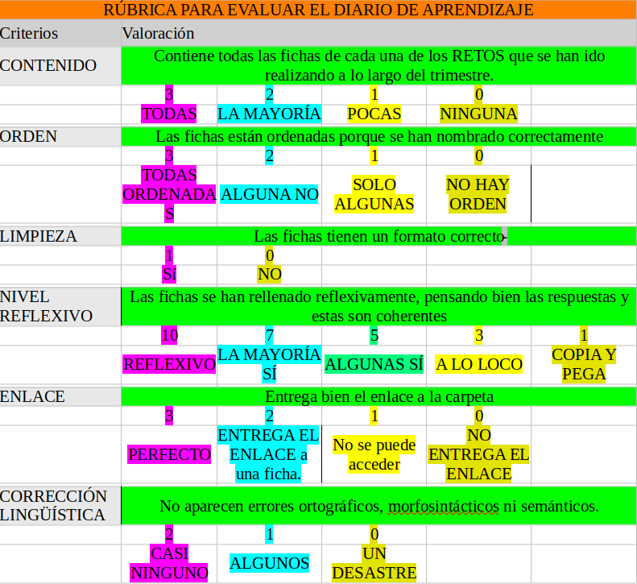

Comprueba que has realizado todas las tareas.
Tu profe comprobará que:
1. Has realizado la presentación y exposición iniciales (en clase o en vídeo).
2. Has realizado y entregado correctamente las actividades propuestas en las seiones 1 y 2 de la situación de Aprendizaje: LAS PARTES DEL TODO Y LISTADO DE PÁGINAS WEB
3. Has realizado el presupuesto y lo has expuesto en clase adecuadamente siguiendo las recomendaciones del profe.
4. Has entregado el enlace a tu carpeta de Diario de Aprendizaje y en ella se encuentran rellenas razonadamente las fichas de cada reto con el nombre apropiado.

Si has tenido algun problema durante la realización de estas actividades siempre puedes preguntar las dudas al profe o a algún compañero/a.
No obstante, recuerda siempre leer bien las instrucciones de las tareas y comprobar que lo tienes todo antes de entregarlas.